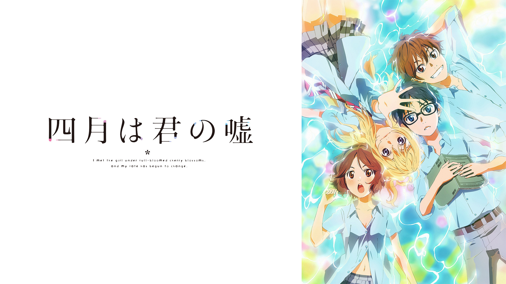

- 四月は君の嘘 -
-あらすじ-
かつて指導者であった母から厳しい指導を受け、正確無比な演奏で数々のピアノコンクールで優勝し、「ヒューマンメトロノーム」とも揶揄された神童有馬公生は、母の死をきっかけに、ピアノの音が聞こえなくなり、コンクールからも遠ざかってしまう。それから3年後の4月。14歳になった公生は幼なじみの澤部椿を通じ満開の桜の下で同い年のヴァイオリニスト・宮園かをりと知り合う。ヴァイオリンコンクールでかをりの圧倒的かつ個性的な演奏を聞き母の死以来、モノトーンに見えていた公生の世界がカラフルに色付き始める。